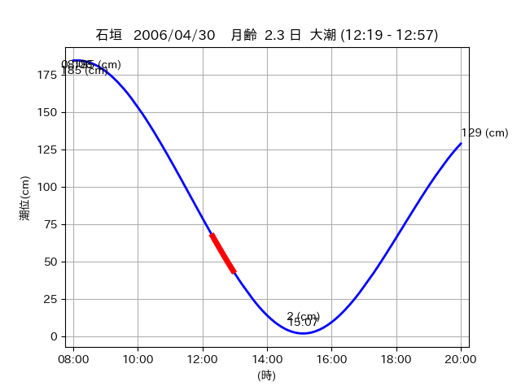
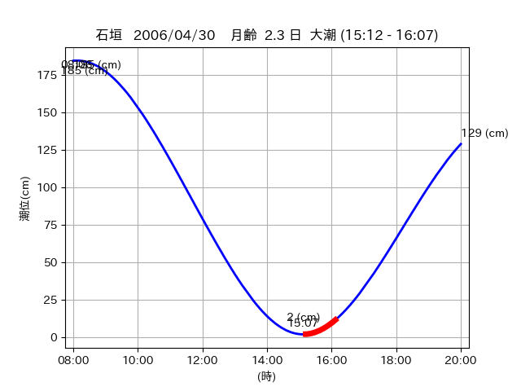

<!DOCTYPE html>
<html>
<head>
    
    <meta http-equiv="content-type" content="text/html; charset=UTF-8" />
    
        <script>
            L_NO_TOUCH = false;
            L_DISABLE_3D = false;
        </script>
    
    <style>html, body {width: 100%;height: 100%;margin: 0;padding: 0;}</style>
    <style>#map {position:absolute;top:0;bottom:0;right:0;left:0;}</style>
    <script src="https://cdn.jsdelivr.net/npm/leaflet@1.9.3/dist/leaflet.js"></script>
    <script src="https://code.jquery.com/jquery-3.7.1.min.js"></script>
    <script src="https://cdn.jsdelivr.net/npm/bootstrap@5.2.2/dist/js/bootstrap.bundle.min.js"></script>
    <script src="https://cdnjs.cloudflare.com/ajax/libs/Leaflet.awesome-markers/2.0.2/leaflet.awesome-markers.js"></script>
    <link rel="stylesheet" href="https://cdn.jsdelivr.net/npm/leaflet@1.9.3/dist/leaflet.css"/>
    <link rel="stylesheet" href="https://cdn.jsdelivr.net/npm/bootstrap@5.2.2/dist/css/bootstrap.min.css"/>
    <link rel="stylesheet" href="https://netdna.bootstrapcdn.com/bootstrap/3.0.0/css/bootstrap-glyphicons.css"/>
    <link rel="stylesheet" href="https://cdn.jsdelivr.net/npm/@fortawesome/fontawesome-free@6.2.0/css/all.min.css"/>
    <link rel="stylesheet" href="https://cdnjs.cloudflare.com/ajax/libs/Leaflet.awesome-markers/2.0.2/leaflet.awesome-markers.css"/>
    <link rel="stylesheet" href="https://cdn.jsdelivr.net/gh/python-visualization/folium/folium/templates/leaflet.awesome.rotate.min.css"/>
    
            <meta name="viewport" content="width=device-width,
                initial-scale=1.0, maximum-scale=1.0, user-scalable=no" />
            <style>
                #map_50a767f0c38d77c20110d24c86629f96 {
                    position: relative;
                    width: 2048.0px;
                    height: 1600.0px;
                    left: 0.0%;
                    top: 0.0%;
                }
                .leaflet-container { font-size: 1rem; }
            </style>
        
</head>
<body>
    
    
            <div class="folium-map" id="map_50a767f0c38d77c20110d24c86629f96" ></div>
        
</body>
<script>
    
    
            var map_50a767f0c38d77c20110d24c86629f96 = L.map(
                "map_50a767f0c38d77c20110d24c86629f96",
                {
                    center: [24.481, 123.822],
                    crs: L.CRS.EPSG3857,
                    ...{
  "zoom": 12,
  "zoomControl": true,
  "preferCanvas": false,
}

                }
            );

            

        
    
            var tile_layer_f5462fb78820f54e19f79305af105003 = L.tileLayer(
                "https://cyberjapandata.gsi.go.jp/xyz/seamlessphoto/{z}/{x}/{y}.jpg",
                {
  "minZoom": 0,
  "maxZoom": 18,
  "maxNativeZoom": 18,
  "noWrap": false,
  "attribution": "\u5730\u7406\u9662\u5730\u56f3",
  "subdomains": "abc",
  "detectRetina": false,
  "tms": false,
  "opacity": 1,
}

            );
        
    
            tile_layer_f5462fb78820f54e19f79305af105003.addTo(map_50a767f0c38d77c20110d24c86629f96);
        
    
            var marker_5968f902f8480eb45917b2768cbe0c59 = L.marker(
                [24.4751, 123.8017],
                {
}
            ).addTo(map_50a767f0c38d77c20110d24c86629f96);
        
    
            var icon_b975650129d5e148c421033e19d6be8f = L.AwesomeMarkers.icon(
                {
  "markerColor": "blue",
  "iconColor": "white",
  "icon": "info-sign",
  "prefix": "glyphicon",
  "extraClasses": "fa-rotate-0",
}
            );
        
    
        var popup_8db8dcf3d7f3dbe629f060f8544b3caf = L.popup({
  "maxWidth": "100%",
});

        
            
                var html_10992352df824154618a8454d402586e = $(`<div id="html_10992352df824154618a8454d402586e" style="width: 100.0%; height: 100.0%;"><table><tr><td></td></tr><tr><td><center>20060430 No.1 </center></table></td></tr></table</div>`)[0];
                popup_8db8dcf3d7f3dbe629f060f8544b3caf.setContent(html_10992352df824154618a8454d402586e);
            
        

        marker_5968f902f8480eb45917b2768cbe0c59.bindPopup(popup_8db8dcf3d7f3dbe629f060f8544b3caf)
        ;

        
    
    
                marker_5968f902f8480eb45917b2768cbe0c59.setIcon(icon_b975650129d5e148c421033e19d6be8f);
            
    
            var marker_9c955d5e5a6fbc1312d5f9e376367977 = L.marker(
                [24.4858, 123.8062],
                {
}
            ).addTo(map_50a767f0c38d77c20110d24c86629f96);
        
    
            var icon_fed2d21e051bc3d12bd7c6a288787b18 = L.AwesomeMarkers.icon(
                {
  "markerColor": "orange",
  "iconColor": "white",
  "icon": "info-sign",
  "prefix": "glyphicon",
  "extraClasses": "fa-rotate-0",
}
            );
        
    
        var popup_f95b173161c828904bb6b98f16ea2fc8 = L.popup({
  "maxWidth": "100%",
});

        
            
                var html_dbcf058ab819646099de29f2ad1971bc = $(`<div id="html_dbcf058ab819646099de29f2ad1971bc" style="width: 100.0%; height: 100.0%;"><table><tr><td></td></tr><tr><td><center>20060430 No.2 </center></table></td></tr></table</div>`)[0];
                popup_f95b173161c828904bb6b98f16ea2fc8.setContent(html_dbcf058ab819646099de29f2ad1971bc);
            
        

        marker_9c955d5e5a6fbc1312d5f9e376367977.bindPopup(popup_f95b173161c828904bb6b98f16ea2fc8)
        ;

        
    
    
                marker_9c955d5e5a6fbc1312d5f9e376367977.setIcon(icon_fed2d21e051bc3d12bd7c6a288787b18);
            
    
            var poly_line_e3a6a58dd73ebbaa68c2e76f931c7414 = L.polyline(
                [[24.4858, 123.8062], [24.4858, 123.8062]],
                {"bubblingMouseEvents": true, "color": "#00FFFF", "dashArray": null, "dashOffset": null, "fill": false, "fillColor": "#00FFFF", "fillOpacity": 0.2, "fillRule": "evenodd", "lineCap": "round", "lineJoin": "round", "noClip": false, "opacity": 1.0, "smoothFactor": 1.0, "stroke": true, "weight": 3}
            ).addTo(map_50a767f0c38d77c20110d24c86629f96);
        
    
            var marker_6d364fef4b6c9cf85eba1033585208bc = L.marker(
                [24.4805, 123.8204],
                {
}
            ).addTo(map_50a767f0c38d77c20110d24c86629f96);
        
    
            var icon_915055f6908dba4364e987b885f68863 = L.AwesomeMarkers.icon(
                {
  "markerColor": "orange",
  "iconColor": "white",
  "icon": "info-sign",
  "prefix": "glyphicon",
  "extraClasses": "fa-rotate-0",
}
            );
        
    
        var popup_b5a185e6cb25f0e3ffaae556bf71a599 = L.popup({
  "maxWidth": "100%",
});

        
            
                var html_39ad46d548461caa6ad93deeb5b8607c = $(`<div id="html_39ad46d548461caa6ad93deeb5b8607c" style="width: 100.0%; height: 100.0%;"><table><tr><td></td></tr><tr><td><center>20060430 No.3 </center></table></td></tr></table</div>`)[0];
                popup_b5a185e6cb25f0e3ffaae556bf71a599.setContent(html_39ad46d548461caa6ad93deeb5b8607c);
            
        

        marker_6d364fef4b6c9cf85eba1033585208bc.bindPopup(popup_b5a185e6cb25f0e3ffaae556bf71a599)
        ;

        
    
    
                marker_6d364fef4b6c9cf85eba1033585208bc.setIcon(icon_915055f6908dba4364e987b885f68863);
            
    
            var poly_line_15098202d690f3892712741d616ef338 = L.polyline(
                [[24.4805, 123.8204], [24.4817, 123.8242]],
                {"bubblingMouseEvents": true, "color": "#FF00FF", "dashArray": null, "dashOffset": null, "fill": false, "fillColor": "#FF00FF", "fillOpacity": 0.2, "fillRule": "evenodd", "lineCap": "round", "lineJoin": "round", "noClip": false, "opacity": 1.0, "smoothFactor": 1.0, "stroke": true, "weight": 3}
            ).addTo(map_50a767f0c38d77c20110d24c86629f96);
        
</script>
</html>